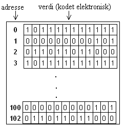

3. Variabler#
Før du går i gang med å programmere (“kode”) er det viktig å lære hva som skjer når vi skriver programkode. En essensiell del av programmeringsspråket er håndtering av variabler. Vi vil i dette kapitlet vise hvordan disse fungerer.
Om variabler og verdier#
Et program forholder seg som regel til data det skal gjøre noe med. Når programmet starter ligger det kanskje noen ubearbeidede data i filer og databaser. Programmet skal lese inn, bearbeide og gjerne lagre (data som nå er bearbeidet) til samme eller andre filer og databaser. Disse data er verdier, gjerne tall (datoer, priser osv.) eller tekster (navn, adresser osv.). Under kjøring må disse verdiene ligge i programmets minne. Disse verdiene leses inn i (og flyttes mellom) variabler. For de som er særlig interessert, gir vi, i avsnittet Variabler og minne i datamaskinen, en illustrert forklaring på hvordan variabler håndteres teknisk.
Eksempler på verdier#
En verdi kan som sagt være et tall eller en tekst.
Michael er et eksempel på en tekstverdi
12.5, -15 og 100000 er eksempler på tallverdier[1]
Hva er variabler?#
Forestill deg et program som skal legge sammen to tall. På skjermen får du opp to tomme bokser. Du får beskjed om taste antall katter du har sett i dag i den første boksen, og så får du beskjed om å taste antall hunder du har sett i dag i den andre boksen. Du bruker tastaturet ditt og taster inn. Så kommer det opp på skjermen hvor mange katter og hunder du har sett totalt i dag.
Dette programmet utgjøres av en rekkefølge på fire handlinger.
Handlingene skrives nedenfor i et kvasispråk, som ligner norsk (ikke i Python).
Hent det første tallet (en verdi) fra tastaturet.
Hent det andre tallet (en annen verdi) fra tastaturet.
Legg det første tallet til det andre tallet og produser et resultat (enda en verdi).
Skriv resultatet ut til skjermen.
Programmet henter to tall fra tastaturet, legger tallene sammen og sørger for at resultatet kan skrives til skjermen.
Programmet kjører én linje av gangen, og hver linje utfører en deloppgave. Når linje 3 utføres, er linje 2 for lengst (hele 2 tusenedels sekunder!) ferdig utført, for ikke å snakke om linje 1. To spørsmål:
Hvordan skal linje 3 finne de tallene den skal legge sammen?
Hvor skal summen tas vare på inntil den skrives ut?
Betrakt følgende programbit:
Hent det første tallet fra tastaturet. Legg det et avtalt sted i maskinenes minne.
Hent det andre tallet fra tastaturet. Legg det et (annet) avtalt sted i maskinenes minne.
Legg det første tallet, som ligger i det første avtalte stedet, til det andre tallet, som ligger i det andre avtalte stedet, og produser et resultat. Resultatet legges i et tredje avtalt sted.
Skriv tallet fra det tredje avtalte stedet ut til skjermen.
Slike avtalte steder representerer programmets husk, og vi kaller dem variabler. En variabel har et navn, en referanse, slik at det går an å ha en avtale mellom linjene 1 og 2, og linje 3 om hvor (hos hvilke variabelnavn) data skal legges/hentes.
En variabel er, med andre ord, en plassholder, med navn, hvor det kan lagres en verdi over en viss tid. Verdien blir innholdet i denne plassholderen. Et program kan ha mange variabler, og hver av disse har en unik referanse (navn). Navnet gjør det mulig for programmet å aksessere variablene:
for å avlese deres verdier
evt. legge nye verdier i dem.
Oppsummert:
En variabel - en plass i maskinens minne hvor vi kan lagre en verdi.
En variabel har et navn som programmet kan bruke når det enten avleser dens verdi eller skriver en ny verdi til den.
Verditilordning#
Som allerede nevnt, utgjør verdier innholdet i variablene. Det er flere
måter variabler kan anta verdier på. Den enkleste måten er
direkte tilordning[2]: pris = 10. Samme variabel (med samme
navn) kan senere tilordnes en annen verdi: pris = 12. Altså kan
verdien variere. Noen flere eksempler:
fornavn = "Michael"(på norsk: fornavn settes lik Michael)etternavn = "Preminger"(på norsk: etternavn settes lik Preminger)pris = 4.25(på norsk: pris settes lik 4.25)antall_maaneder = 12(på norsk: antall_maaneder settes lik 12)
Legg merke til det uthevete settes lik. I Python betyr likhetstegnet = at det settes lik. Det betyr ikke er lik og heller ikke lik.
✍️ Oppgave: Lag en ny celle og skriv inn en verditilordning. Kjør cellen. Lag en ny celle og skriv inn variabelnavnet og kjør cellen. Erstatt så verdien med en annen verdi og kjør begge cellene på nytt.
Datatyper#
Som det fremkommer av eksemplene over, kan variabler lagre forskjellige typer data. Michael er en verdi av typen tekststreng, 4.25 er en verdi av typen desimaltall og 12 er en verdi av typen heltall.
Her er en oversikt over de ulike datatypene:
Datatype |
Eksempel |
Forklaring |
|---|---|---|
Str |
|
Tekststreng |
Int |
|
Hele tall |
Float |
|
Desimaltall, omtales som flyttall |
Boolean |
|
Uttrykkes som enten |
⚠️ Merk! verdier av typen tekststreng skrives med anførselstegn
(fornavn = "Michael"). Verdier av typen tall
skrives uten anførselstegn (pris = 4.25). Det betyr at 42 kan være enten et heltall eller en tekststreng, avhengig av om man har brukt fnutter (anførselstegn).
Om å arbeide med variabler#
Variabler oppstår, lever og dør innenfor programmets levetid, noen variabler er knyttet til programmet som helhet, andre til visse funksjoner eller andre byggeblokker [3] i programmet.
Programmet kan avlese verdien i den aktuelle minneposisjonen, eller forandre den (skrive en ny verdi). Variabelen fornavn kan altså ha forskjellige verdier i løpet av dens levetid[4] (derav betegnelsen variabel). fornavn kan ha verdien Michael, denne kan endres til Lars, deretter til Erik, osv.
Variabler huskes fra tidligere kjørte celler, og kan dermed brukes uten videre i senere celler.
✍️ Oppgave: Opprett først en celle i notebook’en din, kopier innholdet i Celle 1 under over i din celle, og kjør cellen.
Celle 1
1tall1 = 15
2tall2 = 25
3
4tall3 = tall1 + tall2
5
6print(tall3)
40
I eksemplet under brukes variablene tall1 og tall2 definert i celle over.
Celle 2
1tall4 = tall1 * tall2
2
3print(tall4)
375
✍️ Oppgave: Opprett en ny celle under den forrige, kopier inn innholdet i Celle 2 over i cellen, men erstatt “tall1” med “tall10”, og kjør cellen.
Feilmelding kan forekomme hvis du skriver variabelnavnet feil, f.eks. tall10 istendenfor tall1. Da vil det komme en feilmelding.
⚠️ Merk! Skrivefeil er den vanligste feilen i koding.
Det er ikke alltid så lett å tolke feilmeldingene som kommer fra Python, men legg merke til at stedet feilen har oppstått (fil eller celle, linjenummer), markeres.
1tall4 = tall10 * tall2
2
3print(tall4)
---------------------------------------------------------------------------
NameError Traceback (most recent call last)
Cell In[3], line 1
----> 1 tall4 = tall10 * tall2
3 print(tall4)
NameError: name 'tall10' is not defined
En annen ting vi kan lære om kjøring av programmer fra å se på eksempelet overfor er følgende: Dataprogrammer kjører linje etter linje overfra og ned. For at programmet skal kjenne igjen en variabel, skal den ha vært definert en linje lenger opp. Eller den må være definert i en tidligere celle.
⚠️ Merk! Når du åpner notebook’en din på nytt, må du også kjøre cellene i notebooken på nytt. Kjører du da bare en spesifikk celle som bruker en variabel som er definert i en annen celle vil du få samme type feilmelding som over.
✍️ Oppgave: Endre “tall10” til “tall1”. Kjør cellene på nytt. I menyen i notebook’en din vil du finne en knapp som gjør at den kjører gjennom alle celler. Sjekk om du finner den.
Enkle operasjoner med variabler#
Aritmetiske operasjoner med tallvariabler#
Variablene pris og antall_maaneder som vi introduserte tidligere er eksempler på tallvariabler, enten heltall (-200, -1, 0, 1, 500, 10000), eller flyttall (-1.5, 0.0, 0.5, 1.1, 10.0). Disse typer variabler kan det gjøres forskjellige matematiske operasjoner på, bl.a. aritmetikk. I eksemplet under legger vi 1 til variabelen pris og lagrer resultatet i variabelen nypris. På samme måte kan vi også utføre andre operasjoner, slik som minus (-), ganging (*), deling (/) og til og med potens (**).
1pris = 4.25
2nypris = pris + 1
3print(nypris)
5.25
En operasjon vi ofte utfører i programmering, er inkrementering, altså øking av en variabelverdi med 1 (se neste eksempel). Her skjer følgende:
Verdien i variabelen i[5] kopieres til programmets arbeidsområde.
Verdien pluss på 1
Den påplussede verdien kopieres tilbake til variabelen i, og overskriver dens gamle verdi.
Som en kortform for endring av verdi i en variabel basert på gammel verdi, har Python også
operasjonen +=, som gjør det sammen.
1i = 1
2i = i + 1
3print(i)
2
1i = 1
2i += 1
3print(i)
2
Enkle operasjoner på tekststrenger#
Tekststrenger er, som navnet tilsier rekker med påfølgende tegn, som vi av og til trenger å operere på. En typisk operasjon på to (eller flere) tekststrenger, ville være å sammenføye dem (konkatenere på mer teknisk språk). eksemplet under illustrerer slik sammenføying.
Under kobler vi altså to verdier fra to variabler sammen til å utgjøre verdien i en ny variabel.
1fornavn = "Michael"
2etternavn = "Preminger"
3fulltnavn = fornavn + etternavn
4print(fulltnavn)
MichaelPreminger
Her ser du at det mangler et mellomrom mellom fornavnet og etternavnet. Det må vi legge til på måten under:
1fulltnavn = fornavn + " " + etternavn
2print(fulltnavn)
Michael Preminger
En sammenføying kan også skje direkte inne i en print, og trenger ikke mellomlagres i en variabel.
1print(fornavn + " " + etternavn)
Michael Preminger
✍️ Oppgave: Med utgangspunkt i operasjonene som er vist over, prøv å lagק en operasjon som gir følgende print: Preminger, Michael Preminger
Datastrukturer og samlinger#
Før vi avslutter denne introduksjonen til variabler, er det viktig å kort introdusere datastrukturer og samlinger.
I programmering brukes ordet datastruktur ofte om to forskjellige ting:
måten et program organiserer sine data
samlinger, altså variabeltyper som kan holde flere verdier samtidig.
Vi skal forbeholde bruken av termen datastruktur til det første punktet. Et veldig enkelt programs datastruktur kan være så enkel som tre variabler, hvorav to legges sammen for å lagre resultatet i den tredje. Andre programmer har en mer kompleks datastruktur, som består av flere variabler som hver kan holde mange verdier (som henger sammen på forskjellige måter) samtidig. Et program som skal holde orden på et universitet vil trenge en datastruktur som holder lister av studenter med navn og kulltilhørighet, lister av bygninger og tilhørende rom med deres roller (auditorier, toaletter, kontorer), osv. Slike program blir veldig kompliserte (umulige) dersom hvert objekt (student, foreleser, rom) er representert med èn variabel som har et navn. Vi kommer til å introdusere slike samlinger senere i del 2.
Variabler og minne i datamaskinen#
Til slutt i dette kapitlet vil vi kort nevne hva som skjer i de fysiske delene av maskinen når vi programmerer. Programmering er på sitt aller enkleste en rekke fysiske elektroniske signaler. Alt en datamaskin kan og husker ligger lagret elektronisk i maskinens minne. Minnet er inndelt i blokker, og blokkene er inndelt i celler. Enhver celle har en adresse, som er cellens posisjon i blokken.
Når vi skriver programkode, blir denne tolket til slike signaler av et program som heter interpreter (på norsk tolker). Ethvert (tolket) program som kjører i datamaskinen (for eksempel et Python-program) har en minneblokk som tolkerern administrerer. En variabel opptar èn eller flere celler i programmets minneblokk. Navnet på variabelen brukes av programmet istedenfor cellens adresse (posisjon) i programmets minneblokk. Når vi i programmet bruker variabelnavnet (bokstavkombinasjon), blir navnet i maskinen oversatt til en adresse (posisjon) i minnet. Datamaskinen bruker denne posisjonen til å finne verdien.
Som tidligere nevnt, har variabelnavnet ingen betydning for et program, så lenge det er unikt. Det er det som gjør at det får en unik adresse.

Oppgaver#
Klikk her for en notebook med oppgaver. Oppgavefilen lastes da ned til din standardmappe for nedlastinger (til vanlig: Downloads eller Nedlastinger). Denne filen kan du så flytte til din Anaconda-mappe-hierarki, åpne og løse oppgavene (anbefalt å følge rekkefølgen i notebooken).